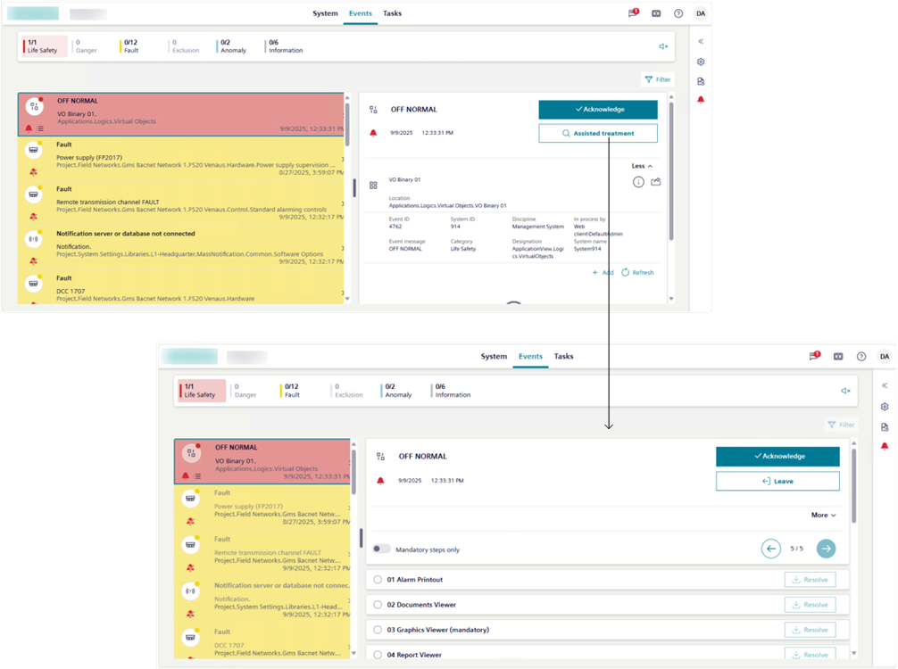

Handling an Event with Assisted Treatment
Assisted treatment provides a guided step-by-step procedure for handling an event. In an event row, the icon indicates that an assisted treatment procedure is available for that event.

Start Assisted Treatment
- The Events workspace, displays on the screen.
- In Event List, select the row of the event that you want to handle.
- The event is selected, and the entire event row becomes highlighted.
If any other event was previously selected, it is automatically deselected (suspended). - The event details display on the right of the event, including the Assisted treatment button.
NOTE: If the Investigate system button is present you must handle the event with investigative treatment. See Handling an Event with Investigative Treatment. - In the event details, select Assisted treatment.
- Assisted treatment is initiated for the selected event. The event details refresh to display also a sequence of steps you must follow to handle that event, while the Leave button allows you to interrupt assisted treatment.
- When assisted treatment is in progress for an event, you cannot select and handle another event in the list.
Complete the Operating Procedure
In the event details, you can carry out the mandatory or optional steps to be carried out to handle the event.
- (Optional) To restrict the list only to mandatory steps, switch on Show required steps only.
NOTE: This selection is not persisted if you leave assisted treatment and then start it again. - Scroll the list, and select the step you want to execute.
- Information and tools for performing that step display in the step itself. For example, if you selected a document step, the document that you must read will display.
- Perform the tasks required for the selected step. For detailed instructions, see:
- When you complete the tasks required by the step, select Resolve to check off a step.
- An icon indicates the step execution status. For more details in Assisted Treatment, see Operating Procedures Steps.
- If you see that a step status is already successfully completed, this means it was automatically executed by the system (either immediately when the event occurred, when you initiated event handling, or depending on configuration).
- In case of non-repeatable steps, the Resolve button disables, and you can only go to the next step.
- In case of repeatable steps, the Resolve button remains enabled and in that case you can repeat the same step. For example, you might want to consult the document in the document step again.
- Repeat the preceding actions until you have completed at least all the mandatory procedure steps. Also complete any non-mandatory steps you want to perform.
- Once you have completed the operating procedure, send any further commands that become available to finish handling the event.
Send Event Handling Commands
Use the buttons in the event details to send any commands as they become available.
A typical sequence may include:
- Select Acknowledge to recognize receipt of the event.
- This action also causes any audible alarm sound of the field panel to be silenced.
- After you acknowledge an event, select Silence or Unsilence to respectively turn off or on any audible alarm sound from the detection line.
- This means that if a field panel is connected to a detection line with horns, you can silence any horns audible sound in the site or turn it back.
- Select Reset to reset the event.
- For an event that can be manually closed, select Close to clear it from the list.
Check Event State
When no further commands are available:
- Use the state icon to determine the next action to take between:
- (active event)
The event cannot be reset until the event source is back to normal (wait for condition).
You must correct the situation that caused the alarm or wait for the source state back to normal condition, before you can send the remaining commands. - (quiet event).
You finished handling this event, and the event is ready to be cleared from the list (ready to be reset).
Select Reset to close the event. It will then be removed from the list.
NOTE: Some events can only be closed manually.
Interrupt Assisted Treatment of an Event
You can interrupt the assisted treatment of an event at any time, and then and later resume the operating procedure from where you left off.
- Select Leave from the event details area.

You can only have one event in assisted or investigative treatment at any given time. If you want to start assisted or investigative treatment of another event, this will interrupt any assisted/investigative treatment currently in progress. However, you can later resume the interrupted treatment from where you left off.
Finish Assisted Treatment of an Event
After you reset an event one of the following occurs:
- The event is removed from the list.
- The event state changes to , and the Close command becomes available (ready to be closed).
For such events that can be manually closed, do the following: - In the event details, select Close to clear the event from the list.